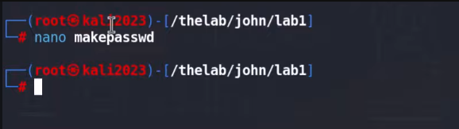

1 Single Crack mode
create a script

contents of script

take a look at the permissions. we'll need to change the permissions

set permission to execute
> chmod 744 makepasswd
run makepasswd

let's go ahead and start cracking the paswort in single mode
> john --single -format=raw-sha cars.txt